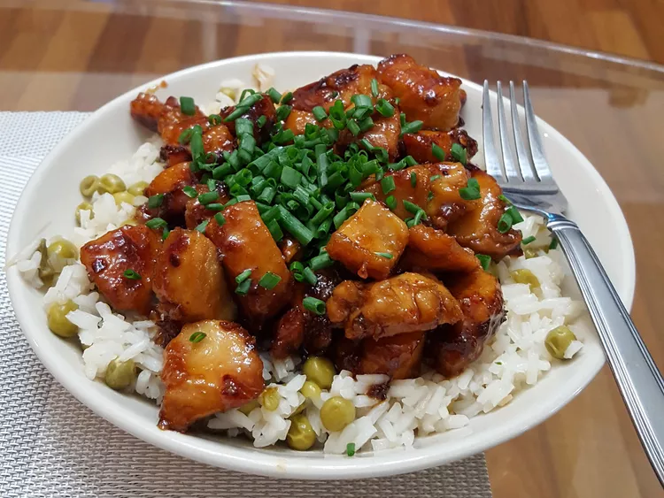

Honey-Chicken

A Delcious Meal
This honey chicken recipe is a grandfathered recipe that I have always enjoyed throughout my early college years as a student. High in protein and low in carbs!
Ingredients
- 1/4 cup of honey
- 2 tablespoons soy sauce
- 1/8 teaspoon red pepper flakes
- 1 1/2 tablespoons olive oil
- 2 skinless, boneless chicken breast halves, cut into bite-size pieces
Steps
- Gather all ingredients
- Whisk honey, soy sauce, and red pepper in a bowl; set aside
- Heat olive oil in a skillet over medium heat; cook and stir chicken in hot oil until lightly brown, about 5 minutes.
- Pour honey mixture into the skillet; continue to cook and stir until chicken is no longer pink in the center and sauce is thickened, about 5 minutes more.
- Enjoy!